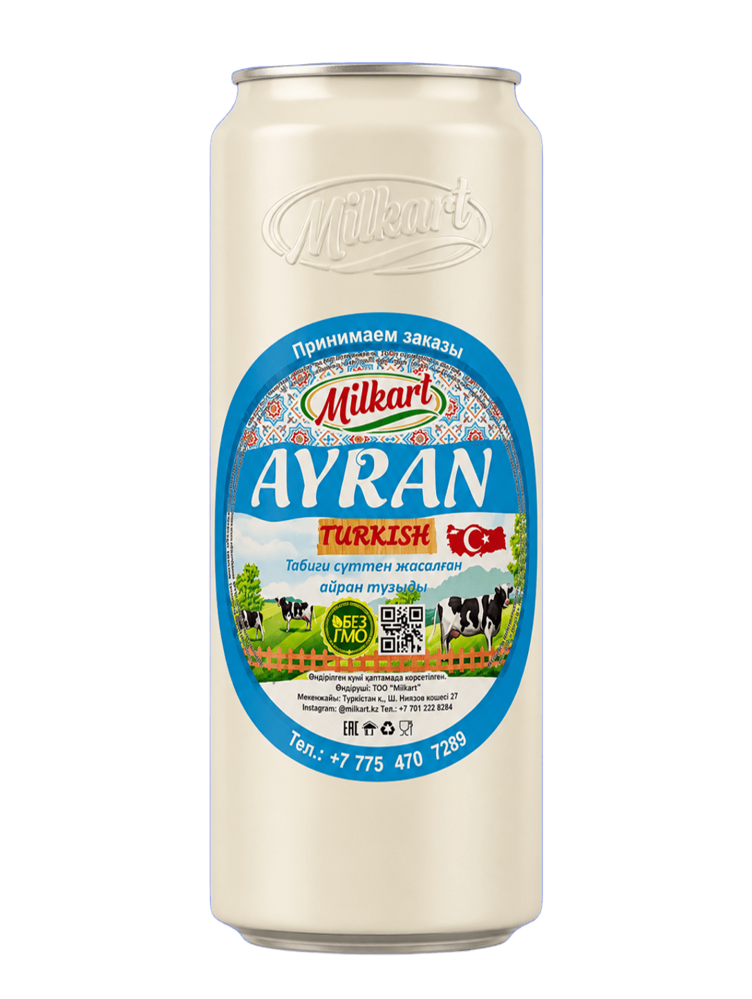
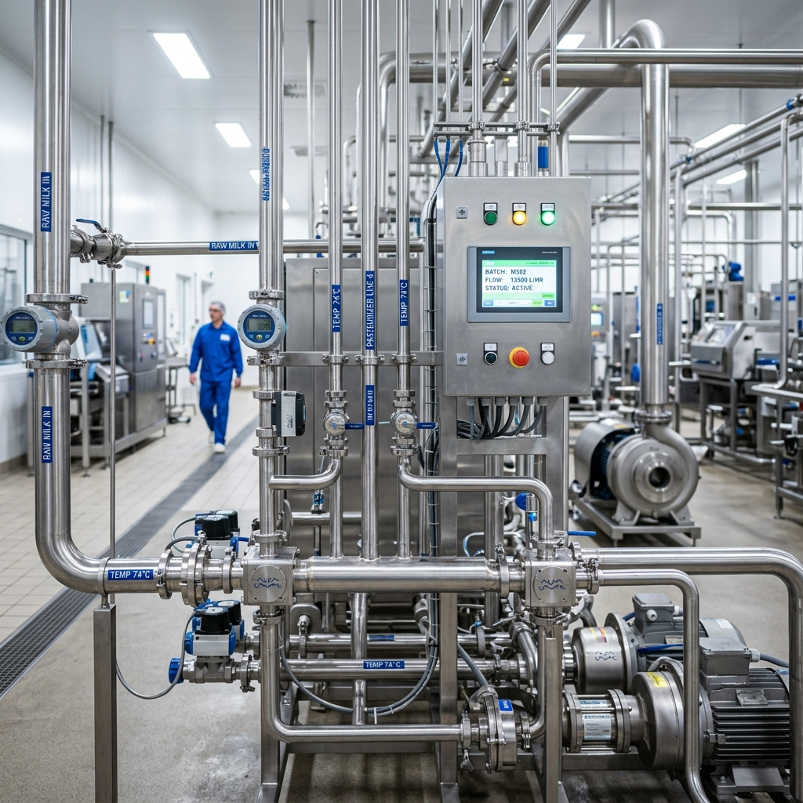
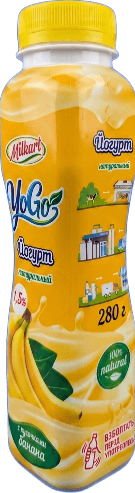
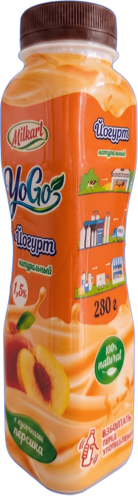
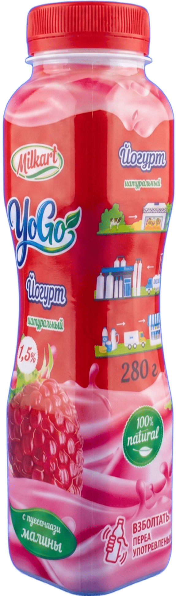
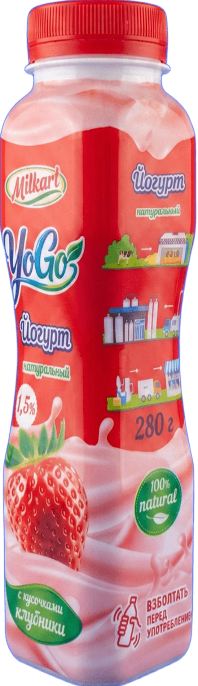

Milkart появился в Туркестане с простой, но смелой идеей: стать первым городским цехом по переработке молока.
Продукт, которого здесь не было.
Основатель компании Жалилов Бабур не искал лёгких путей. Он хотел создать новый для города продукт. Отправной точкой стал турецкий айран: свежий, натуральный и живой.
Из одного продукта выросло целое производство: айраны, йогурты, брынза, каймак, моцарелла, коже, куртоба и сгущённое молоко.


Оборудование было. Знаний не хватало.
Оборудование закупили сразу и по-крупному, но технологов в городе не оказалось. Специалистов искали в Турции, Италии и Узбекистане. Одни не давали нужного качества, другие держали знания при себе.
Компания вошла в серьёзные долги. Сдаваться никто не собирался.
Ответ нашли в людях.
Milkart нанял сильных технологов, которые с нуля обучили собственную команду. Сегодня 15 человек каждый день создают единый, стабильный продукт без компромиссов по качеству.
YoGo стал нашей гордостью.
Живые йогурты с настоящими кусочками фруктов внутри. Начинали с банана, персика и клубники. Сегодня вкусов восемь, а новая секретная серия уже готовится.




Теперь не только Туркестан.
Продукция уже идёт в Кентау и Кызылорду. Следующий шаг: полки Magnum в Шымкенте. Главное остаётся неизменным, качество должно быть доступно каждому.